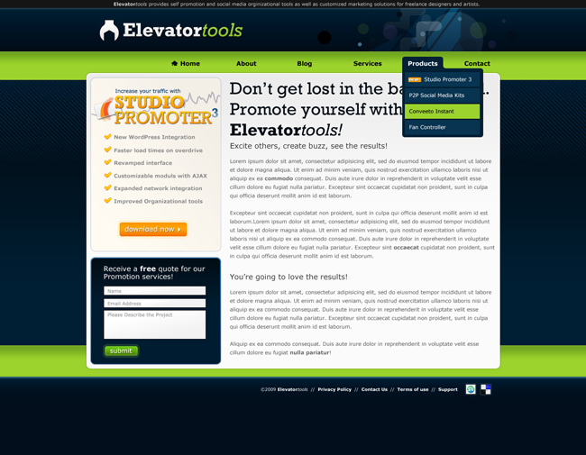
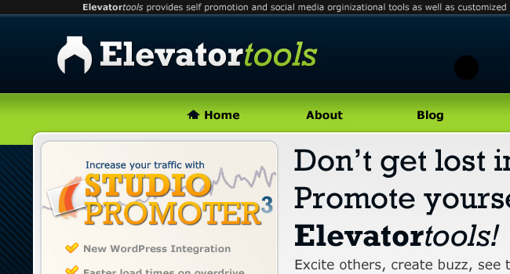

Free PSD Template of a Corporate Web Design
Solely for practice, I fully designed a template layout in Photoshop for the fictitious company “Elevator Tools," and am offering the web PSD template for free. The design is intended for a corporate web site, but with a few tweaks I’m sure you could turn it into a number of different web sites.
You can view a preview the free template layout in the image below:

I think many of the people downloading this PSD file are designers looking to learn from the layout or incorporate parts of it into their designs, and I encourage both! This web PSD template is offered free and without limitations for use in your personal, commercial, and metaphysical works.
Once you download and open the layout in Photoshop, you will see that all the layers are clearly organized and labeled. You should have no problem navigating the PSD file and I hope you will — if you don’t already — start employing some of the organizational methods used. If your PSD will ever make it into the hands of fellow web designers or developers, they will love you for keeping the file organized!

The fonts used are Verdana and Rockwell. When it comes to web-safe fonts, I’m a big fan of Verdana — both for its legibility and clean characters. Rockwell is an awesome typeface, but I wouldn’t want to read more than a couple lines set in it. This is why Rockwell works great in small amounts, such as for big titles that need a little extra flair. You will notice in the PSD file that, with the exception of buttons, only instances of Rockwell have effects applied to them. This is, of course, because Rockwell is not a web-safe font.
This web design layout was the starting point for an extensive tutorial I wrote for PSD Tuts+ titled How to Elevate Your Web Design Process and Results. For more details about the thought process and Photoshop techniques employed to create this template layout, please refer to the tutorial.